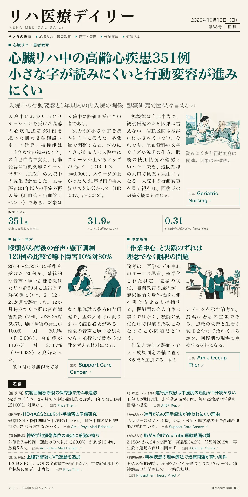
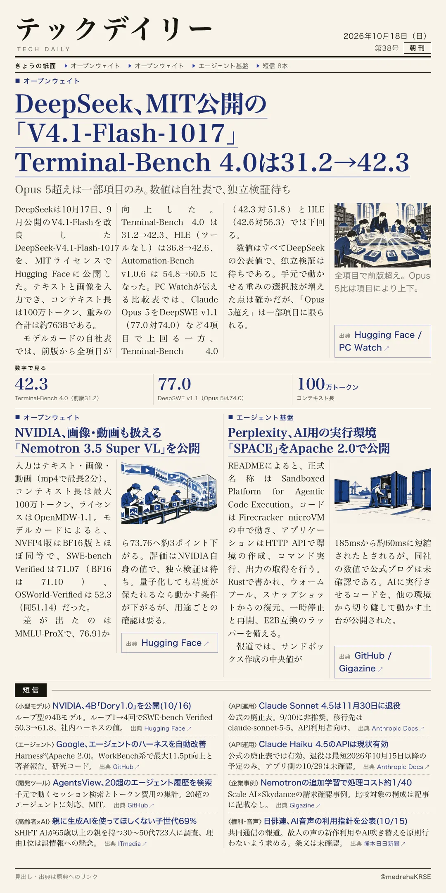

リハ医療デイリー
心臓リハ中の高齢心疾患351例 小さな字が読みにくいと行動変容が進みにくい
入院中の行動変容と1年以内の再入院の関係。観察研究で因果は言えない
入院中に心臓リハビリテーションを受けた高齢の心疾患患者351例で、小さな字の読みにくさと入院中の行動変容、退院後1年の再入院を調べた。

テックデイリー
DeepSeek、MIT公開の「V4.1-Flash-1017」 Terminal-Bench 4.0は31.2→42.3
Opus 5超えは一部項目のみ。数値は自社表で、独立検証待ち
DeepSeekが10月17日、DeepSeek-V4.1-Flash-1017の重みをMITライセンスでHugging Faceに公開した。前版から全項目が向上した。
